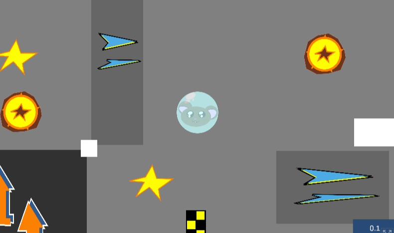
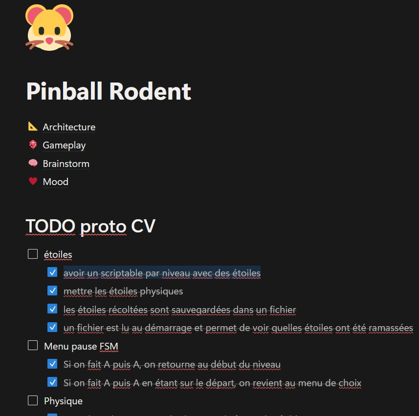
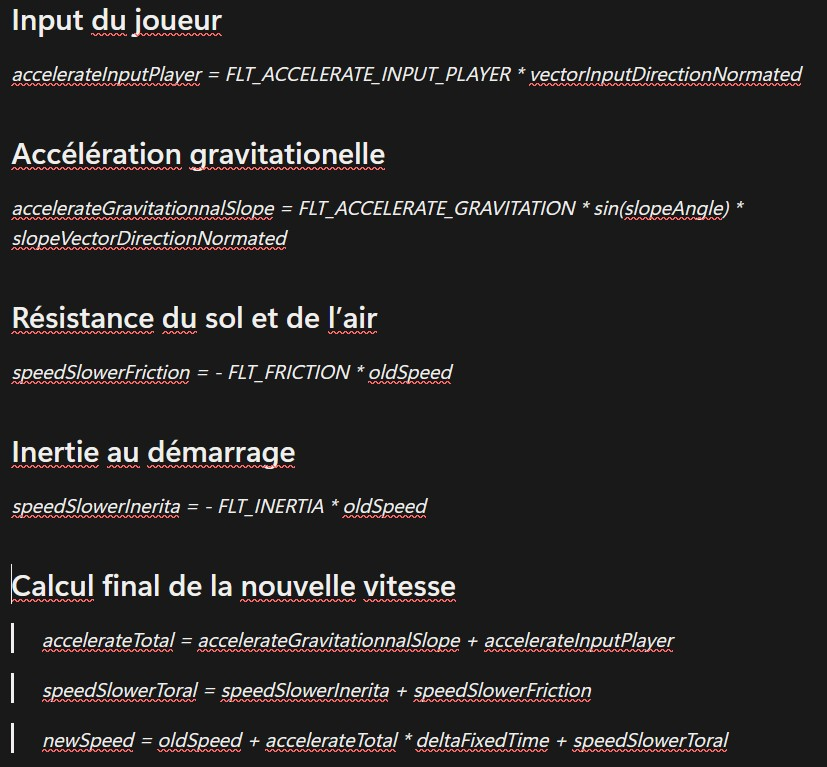
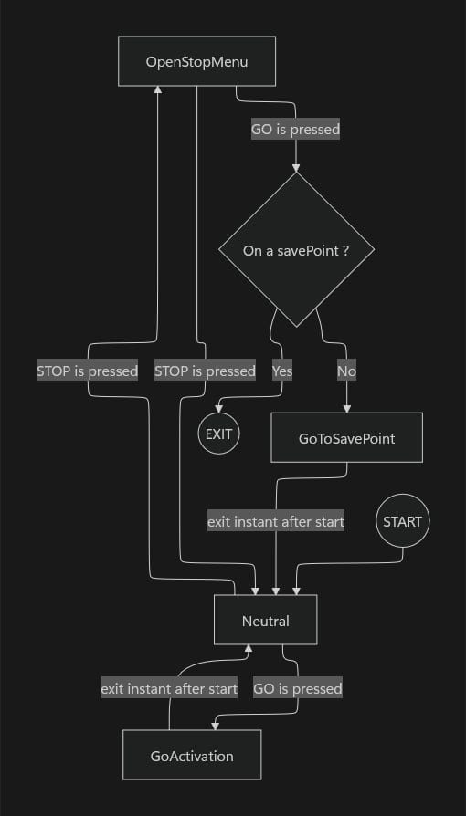
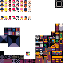
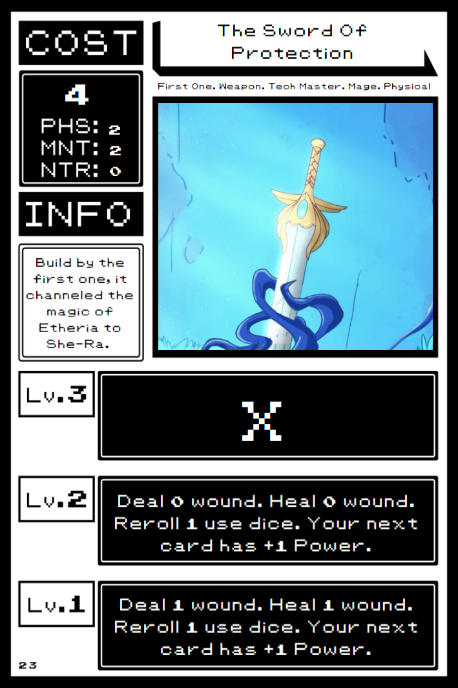
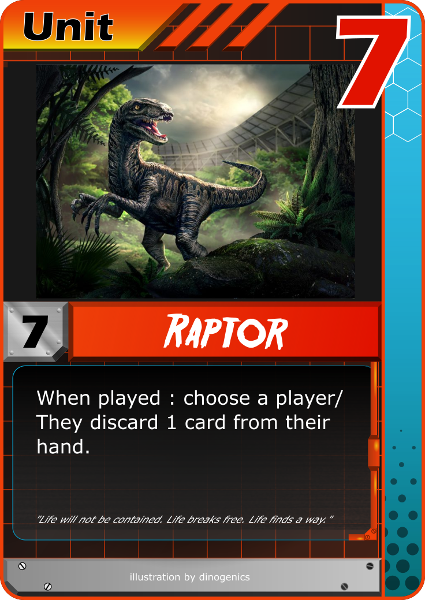
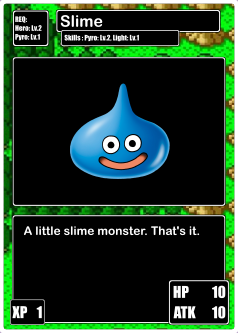

DEV PROJECTS
Liste de projets auxquels j'ai participé.
Liste de projets auxquels j'ai participé.
Jeu d'action où on incarne un hamster coincé dans un flipper.
Play Pinball Rodent Now

Utilisation du site Notion pour réaliser le Game Design Document et tracker les tickets de todo.
Le moteur dynamique built-In de Unity n'est PAS utilisé. A la place, on a appliqué le PFD pour choisir les forces qui agissent sur la bille.

Le menu de pause est piloté par une machine à état permettant de complexifier son flow à posteriori.

Play Pinball Rodent NowMa participation en solo dev à la GMTK 2025. Sur les 37 000 inscriptions, et les 10 000 participations, mon jeu s'est placé :
Cette game jam de 96h a été pour moi l'occasion de mettre en avant plusieurs compétences. J'ai du réaliser entre autre :
Description du défi technique.
Participation à la game jam GMTK 2026 en tant que solo dev.

L'ensemble de ces projets est accessible à l'adresse itch.io suivante :
Page Itchio de SoulBerryRunTileset pour gamejam.
Quelques designs de cartes pour des jeux de sociétés.



